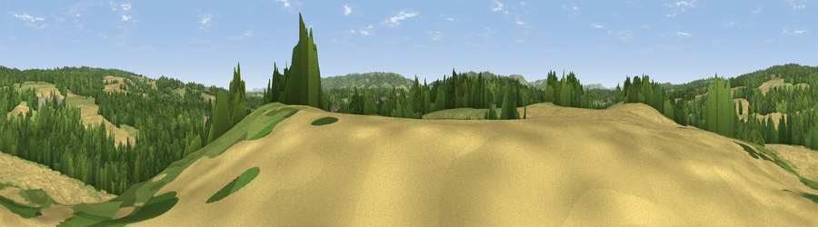

Viewpoint near Midhurst
#34566 in England · top 62% of its area beats it · near MidhurstWhere it is
The exact computed spot (SU 88175 22325). Click the marker for map links.
The view, rendered

A 360° render of this exact spot computed from the terrain model, tree cover and land cover — summer colours, afternoon light, calibrated against photographs of famous viewpoints. Real trees, hedges and buildings will differ in detail.
The panorama
Grey silhouette: terrain skyline in each direction (720 bearings, Earth curvature and refraction included). Dashed green: skyline with trees (+15 m) and buildings (+8 m) as obstacles. Blue strip: how far the ground is visible on each bearing.
Where the view opens
Wedge length = distance to the farthest visible ground on that bearing (vegetation-aware). Rings at 10, 25 and 50 km.
What fills the view
38% woodland · 30% grassland · 29% cropland · 3% built-up
Angular shares of the visible panorama (visual magnitude), not map area. Landscape diversity 0.52 (0–1 Shannon).
Key numbers
More beautiful places nearby
The staircase of upgrades: each row has a higher view potential than everything closer. Driving times are estimates from straight-line distance, calibrated against real road routing — check an actual route before setting out.
| Place | Direction | Drive | Score |
|---|---|---|---|
| Viewpoint near Midhurst | W · 1 km | ~2 min | 41.7 |
| Viewpoint near Lodsworth | E · 4 km | ~9 min | 46.6 |
| Viewpoint near Lodsworth | ENE · 4 km | ~9 min | 61.2 |
| Viewpoint near Lodsworth | NE · 4 km | ~10 min | 65.1 |
| Viewpoint near Cocking | S · 6 km | ~12 min | 78.3 |
| Linch Down | SW · 6 km | ~13 min | 85.2 |
| Beacon Hill | WSW · 8 km | ~17 min | 85.8 |
| Chanctonbury Ring | ESE · 28 km | ~44 min | 87.0 |
50.99358, -0.74497 · source: screening · position refined by local search. Computed location — check access rights before visiting.